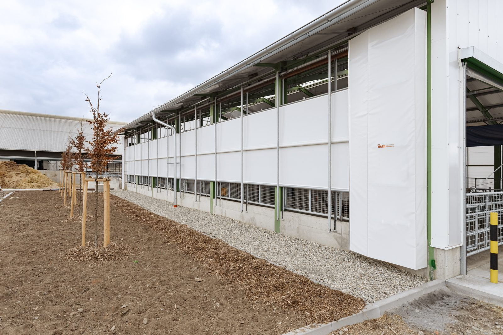
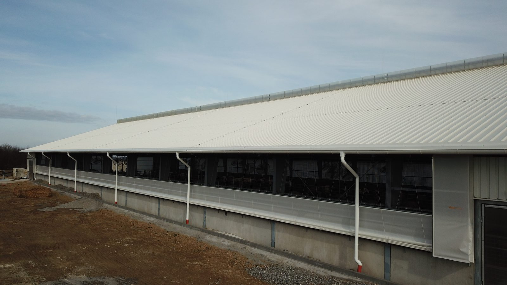
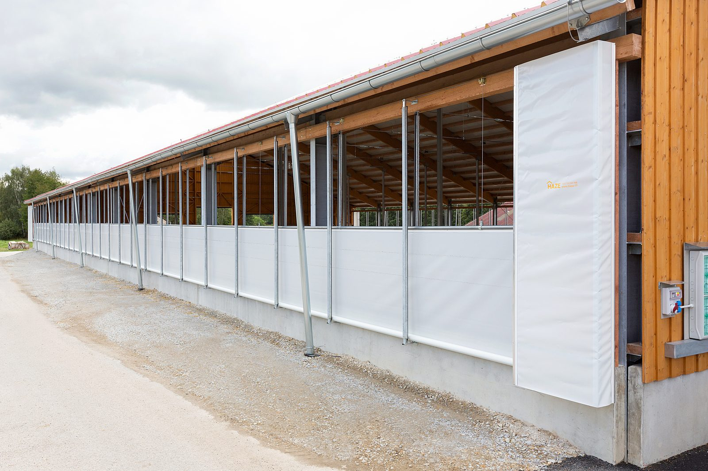
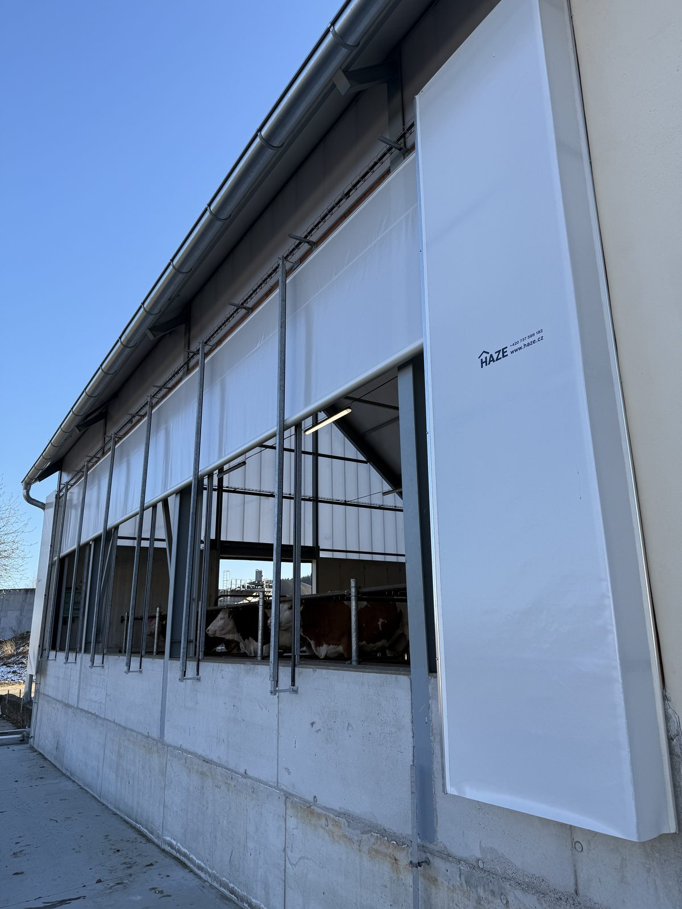
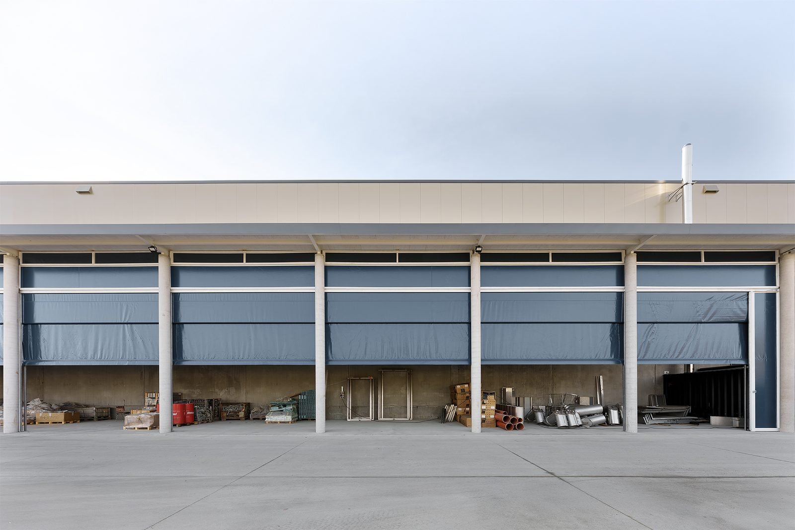
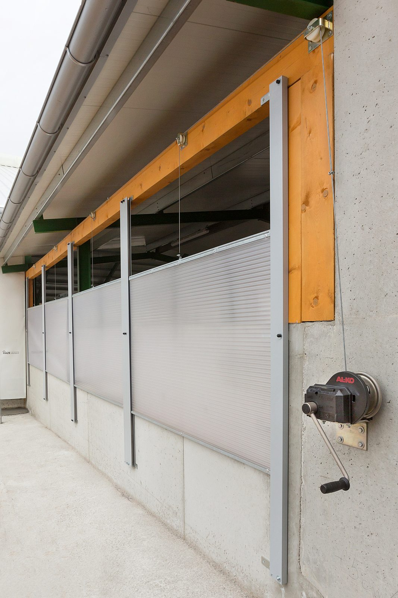

Boční ventilační systémy.
Boční ventilační systém umožňuje plynule regulovat přívod čerstvého vzduchu částečným nebo úplným otevřením boční stěny stáje. Ve spojení se střešním větráním vytváří podmínky pro účinnou přirozenou ventilaci, pomáhá udržovat stabilní mikroklima a zajišťuje dostatečnou výměnu vzduchu po celý rok. Optimální mikroklima přispívá k vyššímu komfortu zvířat, lepšímu zdravotnímu stavu stáda, vyrovnanějšímu příjmu krmiva i vody a vytváří podmínky pro vyšší dojivost. Ovládání může být mechanické pomocí navijáku nebo elektrické. Elektrické provedení lze propojit s meteostanicí HAZE, která automaticky řídí otevření systému podle aktuálních klimatických podmínek.

Každý typ popsaný.

Boční ventilační systém typu A
Osvědčené řešení, jehož funkčnost potvrdilo přes 20 let praxe. Plachta je v horní části zavěšena na ocelových lankách napojených na hlavní lano, které se navíjí přes vodicí kladky na bubínek u mechanického navijáku - tím se plachta pohybuje svisle. Ve spodní části je pevně připevněna k parapetní fošně a při pohybu se skládá na parapet. Opěrná síť drží plachtu za nepříznivého počasí.
| Princip | Navíjení nahoru, dole skládání na parapet |
|---|---|
| Ovládání | Ruční mechanický naviják |
| Výplň | PVC plachta odolná UV i mrazu |
| Max. rozměr | 65 x 3,5 m (délka x výška) |

Boční ventilační systém typu B
Jedno z nejoblíbenějších řešení bočního odvětrávání. Oproti typu A je dole na plachtě navlečená hřídel propojená s motorem - plachta se ve spodní části navíjí, takže se nešpiní a při úplném i částečném uzavření zůstává neustále napnutá. Pohon zajišťuje elektropohon, který lze napojit na meteostanici HAZE a stěnu řídit automaticky.
| Princip | Navíjení nahoru, umístěno na spodní hřídeli |
|---|---|
| Ovládání | Elektropohon |
| Výplň | PVC plachta odolná UV i mrazu |
| Max. rozměr | 67 x 3 m (délka x výška) |

Boční ventilační systém typu C
Plachta je pevně uchycena k horní hliníkové liště a při otevírání se odvíjí dolů na spodní "parapet", čímž se plynule reguluje míra otevření boční stěny. Systém je poháněn elektropohonem a díky bočním vodicím profilům odolává zatížení větrem i při větších otvorech. Umožňuje vysokou intenzitu přirozeného větrání, a proto je vhodný zejména pro býkárny, jízdárny a stáje s vyšší betonovou podezdívkou, která omezuje přímé proudění vzduchu do oblasti hlavy a nozder zvířat. Pro vyšší stavební otvory dodáváme provedení C+ se dvěma navíjecími hřídeli; finální řešení vždy navrhujeme podle konkrétní stavby.
| Princip | Odvíjení dolů, umístěno na horní AL liště |
|---|---|
| Ovládání | Elektropohon |
| Výplň | PVC plachta odolná UV i mrazu |
| Max. rozměr, varianta C | 100 x 4 m (délka x výška) |
| Max. rozměr, varianta C+ | 60 x 5 m (délka x výška) |
Boční ventilační systém typu D
Plachta se roluje na spodní hřídel ovládanou elektropohonem, a navíc je pohyblivé i horní uchycení, které řídí druhý motor. Stěna proto slouží k odvětrávání i ke stínění. Místo podpůrných sítí využívá masivní profily opatřené gumou. Středové zaplachtování mezi stěnami brání profukování, krajová zaplachtování chrání okraje proti potrhání ve větru i fyzickému poškození. Pro vyšší otvory volíme provedení D+ se dvěma hřídelemi; finální řešení vždy navrhujeme podle konkrétní stavby.
| Princip | Rolování na spodní hřídel + pohyblivé horní uchycení (2 motory) |
|---|---|
| Ovládání | Elektropohon |
| Výplň | PVC plachta odolná UV i mrazu |
| Max. rozměr | 100 x 4 m (délka x výška) |
| Max. rozměr, varianta D+ | 60 x 6 m (délka x výška) |

Boční ventilační systém typu E
Navržený pro zemědělské i průmyslové objekty s vysokými nároky na spolehlivost a odolnost. Plachta je na pevno umístěna v horní hliníkové liště, od které se odvíjí dolů. Plachta je uprostřed opatřena kedrem pro uchycení do navíjecí hřídele - díky tomu se navíjí dvakrát rychleji než běžné systémy a rychle reaguje na změny mikroklimatu. Spodní hřídel udržuje plachtu napnutou, navařený límec utěsní prostor k terénu. Vhodné do velmi širokých vjezdů. Možnost výroby v libovolném odstínu dle vzorníku.
| Princip | Odvíjení dolů, umístěno na horní AL liště + navíjecí hřídel uprostřed - odvíjení 2x rychleji |
|---|---|
| Ovládání | Elektropohon |
| Výplň | PVC plachta odolná UV i mrazu |
| Max. rozměr | 60 x 5 m (délka x výška) |

Boční ventilační systém typu F
Výplň tvoří dutinkový polykarbonát o tloušťce 32 mm. Toto provedení doporučujeme pro objekty s vyššími nároky na tepelnou izolaci, zejména pro čekárny před dojírnami. Polykarbonátové desky dodáváme v různých stupních propustnosti světla, takže do objektu přivádějí dostatek přirozeného denního osvětlení. Provedení ve 2 variantách - stěna jednodílná, nebo dvoudílná. Systém lze ovládat manuálním navijákem nebo elektropohonem.
| Princip | Navíjení PC desek na horní kladku |
|---|---|
| Ovládání | Ruční mechanický naviják / Elektropohon |
| Výplň | PC deska 32 mm |
| Provedení | 1 dílné / 2 dílné |
| Max. rozměr | Stanovuje se individuálně |
Který typ na vaši stáj.
Rozhodují rozměry stěny, požadavek na ovládání a to, zda potřebujete jen větrat, nebo i stínit a izolovat. U každého typu vidíte druh stěny, max. rozměr i ovládání.
-
Typ A
Osvědčené větrání.
Svinovací stěna pro běžné odvětrávání stájí, jednoduchá a spolehlivá obsluha.
- Stěna
- Svinovací, PVC plachta
- Rozměr
- Max. 65 x 3,5 m
- Ovládání
- Ruční mechanický naviják
-
Typ B
Stále napnutá plachta.
Svinovací stěna, kde se plachta navíjí dole - nešpiní se a zůstává stále napnutá.
- Stěna
- Svinovací, PVC plachta
- Rozměr
- Max. 67 x 3 m
- Ovládání
- Elektropohon
-
Typ C / C+
Plynulá regulace.
Rolovací stěna s plynulou regulací výšky; pro vyšší otvory volíme provedení C+.
- Stěna
- Rolovací, PVC plachta
- Rozměr
- Max. 100 x 4 m (C+ 60 x 5 m)
- Ovládání
- Elektropohon
-
Typ D / D+
Větrání i stínění.
Rolovací stěna se dvěma motory - kromě větrání umí i stínit; pro výšky nad 4 m verze D+.
- Stěna
- Rolovací, PVC plachta
- Rozměr
- Max. 100 x 4 m (D+ 60 x 6 m)
- Ovládání
- Elektro (2 motory)
-
Typ E
Rychlá reakce, průmysl.
Navíjí 2× rychleji než běžné systémy, zvládne i náhradu rolovacích vrat u širokých vjezdů.
- Stěna
- Rolovací, PVC plachta
- Rozměr
- Max. 60 x 5 m
- Ovládání
- Elektropohon
-
Typ F
Izolace a denní světlo.
Polykarbonátová stěna do čekáren před dojírnami a tam, kde záleží na teple a denním světle.
- Stěna
- Polykarbonát 32 mm
- Rozměr
- Individuálně
- Ovládání
- Naviják nebo elektro
Vyplňte formulář a my se vám ozveme do následujícího pracovního dne.
Co se ptáte nejčastěji.
Z čeho je výplň stěny?
U typů A až E PVC plachta odolná UV záření i mrazu, u typu F dutinkový polykarbonát o tloušťce 32 mm. Polykarbonát volíme tam, kde je potřeba lepší tepelná izolace a průchod denního světla.
Jak se boční stěna ovládá?
Mechanickým navijákem (ručně) nebo elektropohonem. Elektrické typy lze napojit na meteostanici HAZE a stěnu řídit automaticky podle teploty a větru.
Jak velkou stěnu zvládnete zakrýt?
Záleží na typu systému. Typ A zvládne až 65 x 3,5 m, typ B 67 x 3 m, typy C a D až 100 x 4 m (varianty C+ a D+ pro vyšší otvory 60 x 5, resp. 60 x 6 m) a typ E 60 x 5 m. U polykarbonátového typu F se rozměr stanovuje individuálně. Finální skladba se vždy ověřuje při zaměření.
Zvládne stěna i stínění, nejen větrání?
Ano, typ D má pohyblivé horní i spodní uchycení a slouží k odvětrávání i ke stínění zároveň.
Jak probíhá montáž?
Stěnu vyrobíme na míru a montáž zajišťuje náš montážní tým. Po předání zaučíme obsluhu. Na technologii a montáž poskytujeme záruku 2 roky.
Jde stěnou nahradit rolovací vrata?
U širokých vjezdů ano - díky robustní konstrukci a variabilním rozměrům to umožňuje zejména typ E.